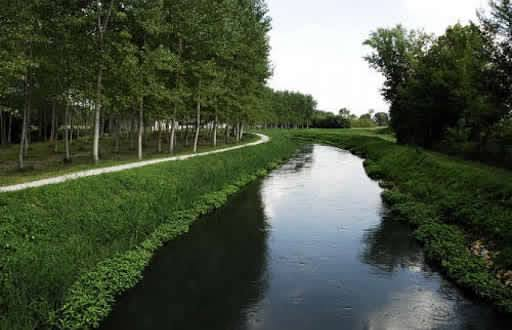
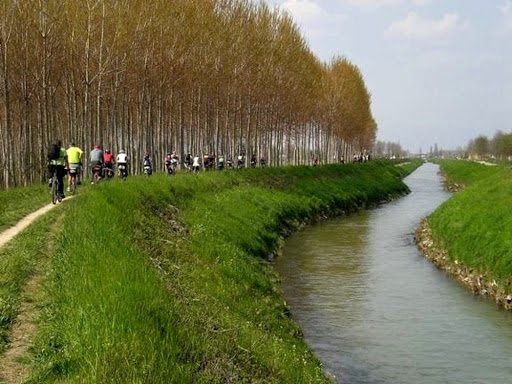

Città d’acque è un titolo che Camposampiero merita ampiamente essendo rimasto l’unico centro medioevale del territorio padovano a conservare tale carattere da quando, mezzo secolo fa, a Padova vennero interrati i canali che la attraversavano. A Camposampiero, oltre a corsi d’acqua minori quali la Rustega, il Barbacan, l’Orcone e il canale Tergolino, scorrono il Vandura, il Muson Vecchio, il Muson dei Sassi. Fu proprio su una motta nei pressi del Vandura che i Camposampiero fecero edificare il castello, mentre le sue acque vennero sdoppiate per realizzare l’anello difensivo attorno alle mura. Seguire questa fitta rete di corsi d’acqua non è facile, perché essi si nascondono sotto le strade e gli edifici, ma poco oltre riemergono, in alcuni punti con forza. Importanti opere idrauliche caratterizzano la città. Porta Antonella risale al 1485 e perfeziona un intervento idraulico operato dai Carraresi, che avevano fatto scavare il canale Musonello - oggi Tergolino - per regolare le acque del Muson Vecchio. La Serenissima intervenne perfezionando il manufatto, che è ancora oggi visibile e perfetto come un tempo. Superata villa Querini, il Muson continua il suo corso verso le Bocche, il perfetto manufatto realizzato dalla Serenissima nel 1612 che permette alle acque del Muson vecchio di passare sotto all’alveo del Muson dei Sassi.
“City of waters” is a title that Camposampiero fully deserves, as it has remained the only medieval centre in the province of Padua to have preserved this character since the canals running through the city of Padua were covered over around half a century ago. Camposampiero, in addition to smaller waterways like the Rustega, the Barbacan, the Orcone and the Tergolino canal, is also crossed by the Vandura, the Muson Vecchio and the Muson dei Sassi. It was indeed on a mound near the Vandura that the people of Camposampiero commissioned the building of their castle, diverting its waters to form the defensive moat around the walls. It is not easy to follow this dense network of waterways, as they are often hidden beneath streets and buildings before re-emerging not far away, sometimes quite forcefully. The town is features a number of important water works. Porta Antonella dates back to 1485, completing work done by the Carraresi, who had dug the Musonello canal (today known as the Tergolino) to manage the waters of the Muson Vecchio. The Republic of Venice later intervened to improve the structure, which is still visible today, as well preserved as it was in the past. After crossing Villa Querini, the Muson continues its course towards the Bocche, the remarkable structure built by the Venetians in 1612, which allows the waters of the Muson Vecchio to flow underneath the bed of the Muson dei Sassi.

